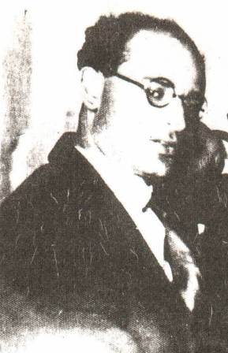

ברוך אוליצקי
משורר
 ברוך אוליצקי נולד בטריסק בשנת 1907. הוריו מסורתיים היו אך מתקדמים-משכילים. היו חנוונים.
ברוך אוליצקי למד ב"חדר" בטריסק. בשנות ילדותו התייתם משני הוריו. אומץ
בידי דודו שמחה אוליצקי בעיירה רטנה. שם למד בבית ספר עברי-ציוני.
בשובו לטריסק היה מצבו הכלכלי בכי רע, עד כדי רעב היגיע. וכדי להתקיים
ניהיה מורה לילדיהם של יהודים בכפר לא רחוק מהעיירה.
ברוך אוליצקי נולד בטריסק בשנת 1907. הוריו מסורתיים היו אך מתקדמים-משכילים. היו חנוונים.
ברוך אוליצקי למד ב"חדר" בטריסק. בשנות ילדותו התייתם משני הוריו. אומץ
בידי דודו שמחה אוליצקי בעיירה רטנה. שם למד בבית ספר עברי-ציוני.
בשובו לטריסק היה מצבו הכלכלי בכי רע, עד כדי רעב היגיע. וכדי להתקיים
ניהיה מורה לילדיהם של יהודים בכפר לא רחוק מהעיירה.
כעבור זמן קצר התחתן עם שרקה ילידת העיירה. נולד להם בן,מוניק שמו. ולפרנסתם פתחו חנות למצרכי מזון. עקב המשבר הכלכלי ,החנות לא צלחה ונסגרה. לפרנסתו שוב נהיה מורה,הפעם בבית ספר מרשת "ציש"א שפת ההוראה ביידיש . מאד נערץ על תלמידיו.הצטיין בגישתו הפדגוגית החדישה, התייחס לילדים כשווים, אהב ילדים,והם החזירו לו אהבה.יחס מיוחד היה לו לילדי דלת העם. אשר את סבלם חווה על בשרו בשנות העוני והסבל שלו. חיי המשפחה שלו עלו על שרטון, נפרד מאשתו ומבנו האהוב. בשנת 1925 פרסם את שירו הראשון "דמי מעורבב" בעיתון הספרותי "דפי ספרות" בשנות השלושים המוקדמות היגיע לוורשה,לא מצא עבודה, רעב ללחם,אך יצר וכתב שירה. יצירותיו פורסמו בירחונים ובכתבי-עת רבים. כאן שוב נישא, לתלמידתו מתקופת ההוראה בבית בספר בטריסק. נמצאה לו משרת מורה בבי'ס יידיש, רעייתו כספרנית בספריה בעיר.

בתקופה זו רבו יצירותיו,אך לא קובצו לספרים... עם פרוץ מלחמת העולם השנייה ופלישת הגרמנים לפולין, ברח עם אשתו לטריסק,קבל עבודה בעיר גרודנה כמורה ומרצה בגימנסיה סובייטית. הפלישה הגרמנית ביוני 1942 הפתיע אותם,הספיקו להגיע עד לעיירה ליאכוביטש שם נרצח עם רבים מיהודי העיירה. בתום מלחמת העולם השנייה,הצליחו אחיו המשורר-המספר לייב אוליצקי ואחיו המשורר מאתיס אוליצקי להוציא לאור, אוסף בו חלק משיריו שהצליחו לאסוף בשם: "דמי מעורבב".
מאטס אוליצקי
משורר
 המשורר מאטעס אוליצקי נולד בטריסק בשנת 1915 במשפחה יהודית מסורתית.אחיהם הצעיר של הסופר ,המספר והמשורר
לייב אוליצקי, המשורר והמספר ברוך אוליצקי,
השכלתו הבסיסית קיבל "בחדר מודרני",שהוקם בטריסק בשלהי
מלחמת העולם הראשונה,בו לימדו גם שפות ומתמטיקה. היה ברוך
כשרונות. כבר מגיל צעיר קרא בסתר ספרות כללית. עם היווסדו של
בית הספר היהודי, בו לימדו שפות יידיש ועברית,למד בו. עם התפלגות בית הספר –עברי "תרבות" נוסד גם ביתספר "צישא"
בהשפעת הבונד, בהנהלת אחיו לייב,בו לימדו ביידיש, עבר מאטיס
איליו. שם סיים את חוק לימודיו. אחרי שנתיים עבר להשתלם לקורס סמינריוני למורים לבתי ספר של "צישא". כבר אז החל לפרסם את שיריו,בעיקר שירי ילדים ,שפורסמו בספרי לימוד, מקראות, ביידיש".
המשורר מאטעס אוליצקי נולד בטריסק בשנת 1915 במשפחה יהודית מסורתית.אחיהם הצעיר של הסופר ,המספר והמשורר
לייב אוליצקי, המשורר והמספר ברוך אוליצקי,
השכלתו הבסיסית קיבל "בחדר מודרני",שהוקם בטריסק בשלהי
מלחמת העולם הראשונה,בו לימדו גם שפות ומתמטיקה. היה ברוך
כשרונות. כבר מגיל צעיר קרא בסתר ספרות כללית. עם היווסדו של
בית הספר היהודי, בו לימדו שפות יידיש ועברית,למד בו. עם התפלגות בית הספר –עברי "תרבות" נוסד גם ביתספר "צישא"
בהשפעת הבונד, בהנהלת אחיו לייב,בו לימדו ביידיש, עבר מאטיס
איליו. שם סיים את חוק לימודיו. אחרי שנתיים עבר להשתלם לקורס סמינריוני למורים לבתי ספר של "צישא". כבר אז החל לפרסם את שיריו,בעיקר שירי ילדים ,שפורסמו בספרי לימוד, מקראות, ביידיש".
עם כניסת הסובייטים לטריסק, עסק בהוראה בבית הספר יידיש שהפך לממלכתי. עם פלישת הגרמנים ביוני 1942 הצטרף למעטים מהעיירה שהצטרפו לנסוגים עם הצבא האדום. בקירגיזיסטן הועסק בעבודה פיזיתמפרכת חלה מאד. את מיטתו סעדה בת העיר טריסק,סוניה(גלר) והם נישאו. עם תום המלחמה חזרו לפולין, ויחד עם אחיו לייב ואינטלקטואלים אחרים ניסו להחיות חיי תרבות יהודיים בפולין. הספיק לפרסם שתי אסופות של שיריו. אחרי זמן קצר, עזבו לגרמניה הכבושה,התגוררו במחנה עקורים. שם המשיך לפרסם יצירותיו.
בשנות החמישים המוקדמות היגרו (מאטעס,אשתו ובנו) לארה'ב והתיישבו בניו יורק. כאן שוב המשיך ליצור ולפרסם. את סיפוריו ומסותיו פרסם בעיתונות היידיש ובירחונים ספרותיים. לפרנסתו עסק חלקית בהוראה. חלק משיריו פורסמו בישראל ע'י הוצ. ספרים "ארבעטער רינג". מתגורר בניו יורק.
לייב אוליצקי
סופר יידיש
 לייב –אריה – אוליצקי,סופר יידיש ,משורר, סופר ילדים ומתרגם. נולד בטריסק, פולין,בשנת 1894. נפתר בגבעתיים בשנת 1975.
לייב אוליצקי זכה בילדותו לחינוך יהודי מסורתי,אך גם חינוך כללי. הפולנית היתה שפה שגורה על פיומילדות.עם סיום לימודיו התמסר להוראה במסגרות בתי הספר היהודיים ביידיש. הוא לימד וניהל מוסדות חינוך בעיירתו בפולין, בשנת1938 עבר לורשה ומשם לעיר קובל. סיפוריו הראשונים , סיפורים קצרים, נדפסו מראשית שנות העשרים, ובהם תיאר את גלגולי העיירה היהודית בעת מלחמת העולם הראשונה.ים
בשנות הוראוחיו הארוכות במוסדות החינוך היהודיים כתב אוליצקי והוציא לאור ספרי משלים,מקראות וסיפורים לילדים ביידיש.
כמתרגם, עשה רבות לתרגום הספרות הפולנית ליידיש. בין היוצרים
שתרגם נמנים: יוליאן טובין, אדם מיצקביץ'. ומרוסית תרגם ליידיש ,
מיצירותיו של פושקין,וקרילוב.
כאשר פרצה מלחמת העולם השנייה הוגלה לייב אוליצקי על ידי הרוסים לבשקיריה ועבד שם עבודות כפייה. בשנים 1942 עד 1945 עבד בבית חולים צבאי- סובייטי ואיתו נדד עד ניצחון ברית המועצות
על גרמניה. עם תום המלחמה חזר לפולין,ובשנת 1959 עלה לישראל.
בארץ השתקע אוליצקי בגבעתיים,והמשיך בפעילותו הספרותית העניפה. הוא פרסם מעל ארבעים כרכים של ספורת,,תרגומים,משלי
ושירי ילדים ביידיש. לעברית תורגמו רק שלושה מספריו. שני אחיו
של אוליצקי,ברוך אוליצקי ומתתיהו אוליצקי היו אף הם משוררי-
יידיש. אחדים משיריו של ברוך אוליצקי, שנהרג בידי הנאצים,תורגמו
לעברית על ידי אברהם שלונסקי.
לייב –אריה – אוליצקי,סופר יידיש ,משורר, סופר ילדים ומתרגם. נולד בטריסק, פולין,בשנת 1894. נפתר בגבעתיים בשנת 1975.
לייב אוליצקי זכה בילדותו לחינוך יהודי מסורתי,אך גם חינוך כללי. הפולנית היתה שפה שגורה על פיומילדות.עם סיום לימודיו התמסר להוראה במסגרות בתי הספר היהודיים ביידיש. הוא לימד וניהל מוסדות חינוך בעיירתו בפולין, בשנת1938 עבר לורשה ומשם לעיר קובל. סיפוריו הראשונים , סיפורים קצרים, נדפסו מראשית שנות העשרים, ובהם תיאר את גלגולי העיירה היהודית בעת מלחמת העולם הראשונה.ים
בשנות הוראוחיו הארוכות במוסדות החינוך היהודיים כתב אוליצקי והוציא לאור ספרי משלים,מקראות וסיפורים לילדים ביידיש.
כמתרגם, עשה רבות לתרגום הספרות הפולנית ליידיש. בין היוצרים
שתרגם נמנים: יוליאן טובין, אדם מיצקביץ'. ומרוסית תרגם ליידיש ,
מיצירותיו של פושקין,וקרילוב.
כאשר פרצה מלחמת העולם השנייה הוגלה לייב אוליצקי על ידי הרוסים לבשקיריה ועבד שם עבודות כפייה. בשנים 1942 עד 1945 עבד בבית חולים צבאי- סובייטי ואיתו נדד עד ניצחון ברית המועצות
על גרמניה. עם תום המלחמה חזר לפולין,ובשנת 1959 עלה לישראל.
בארץ השתקע אוליצקי בגבעתיים,והמשיך בפעילותו הספרותית העניפה. הוא פרסם מעל ארבעים כרכים של ספורת,,תרגומים,משלי
ושירי ילדים ביידיש. לעברית תורגמו רק שלושה מספריו. שני אחיו
של אוליצקי,ברוך אוליצקי ומתתיהו אוליצקי היו אף הם משוררי-
יידיש. אחדים משיריו של ברוך אוליצקי, שנהרג בידי הנאצים,תורגמו
לעברית על ידי אברהם שלונסקי.
רשימת ספריי לייב אוליצקי בבית הספרים הלאומי בירושלים.
- פון דער היים און פון דער פרעמד
- שפארונעס אין הארצן
- ישיבה לייט
- מענטשן פון מיין שטעטל
- משלים בוך
- צום זון אין צה'ל
- וואר און ווערן
- וואלינער יידן
- דודיה הנפח
- אויף די ראנדן
- אין אן אוקופירט שטעטל (1924)
- אין שיין אוןשאטן
- אין שיין פון פלאמען
- ג ע ר א נ ג ל
- דאדיע קאוואל
- דורך טויט צום לעבן
- דיאמאנטן פאר אלע משלים
- ה ו נ ט מ א ן
- זאגט די וועלט
- זון אנטקעגן
- טריט ביי טריט
- טריט ביי טרט
- יידיש פארן פערטן קלאס
- מיטן פנים צו דער זון
- מיין הארץ רייזע
- מיינע הונדערט קינדער (תרגום ליידיש)
- דער מענטש וועט גוט זיין
- משלים פאר קינדער און גרויסע
- פאלקטימליכע באלאדן(1957)
- פון גאלדענעם קרוג : םון דער העברישער דיכטונגשלוימל'ה
ליבער ברענער
ממנהיגי ה"בונד " בפולין.
 ליבער ברענער נולד בטריסק בשנת 1901 במשפחה עניה.אביו גבאי
היה אצל בנו של הרבי מטריסק,אימו ניהלה חנות קמח.
ליבער למד בחדר .עם פרוץ מלחמת העולם הראשונה עקרה המשפחה
לעיר זווהיל, שם למד בגימנסיה רוסית. עם סיום המלחמה חזרה המשפחה לטריסק. ליבער עזר למשפחתו להיתפרנס ע'י מתן שיעורים
פרטיים לבניהם של יהודים עמידים. כמורה בבית הספר העברי.
היה בין מקימי בית הספר העממי ששפת ההוראה שלו- יידיש. היה המורה המסור ביותר! פעילותו הציבורית הסוציאליסטית ב"בונד",היתה
חשודה בעיני השלטונות הפולניים-כפעילות קומוניסטית,הם הטרידו אותו
רבות. בשנת 1929 עבר עם משפחתו לעיר צ'נסטוכוב במערב פולין.
עסק בהוראת ספרות בבית ספר ע"ש י.ל. פרץ .ומרצה במוסד "קולטור
ליגע" והשתלב בפעילות ה"בונד".
ליבער ברענער נולד בטריסק בשנת 1901 במשפחה עניה.אביו גבאי
היה אצל בנו של הרבי מטריסק,אימו ניהלה חנות קמח.
ליבער למד בחדר .עם פרוץ מלחמת העולם הראשונה עקרה המשפחה
לעיר זווהיל, שם למד בגימנסיה רוסית. עם סיום המלחמה חזרה המשפחה לטריסק. ליבער עזר למשפחתו להיתפרנס ע'י מתן שיעורים
פרטיים לבניהם של יהודים עמידים. כמורה בבית הספר העברי.
היה בין מקימי בית הספר העממי ששפת ההוראה שלו- יידיש. היה המורה המסור ביותר! פעילותו הציבורית הסוציאליסטית ב"בונד",היתה
חשודה בעיני השלטונות הפולניים-כפעילות קומוניסטית,הם הטרידו אותו
רבות. בשנת 1929 עבר עם משפחתו לעיר צ'נסטוכוב במערב פולין.
עסק בהוראת ספרות בבית ספר ע"ש י.ל. פרץ .ומרצה במוסד "קולטור
ליגע" והשתלב בפעילות ה"בונד".
משנת 1934 עד פרוץ מלחמת העולם השניה שימש כראש פרויעקט "טאז" מושבות קיץ להבראת ילדי שכבות העוני היהודיות בפולין. בשנת1936 שללו שלטונות פולין את רשיון ההוראה שלו בגין פעילותו הפוליטית. היה אחד ממנהיגי המחתרת היהודית שהוקמה בגיטו צ'נסטוכוב. השתתץ בפעילות נגד הנאצים, רוב חבריו ניספו.
ליבער ,אישתו וביתם הקטנה לילי,שהוסתרה בצד הארי ניצלו. היה בין הראשונים בניסיון להחייאת החיים היהודיים ועמד בראש הועד היהודי של העיר צ'נסטוכוב. פרסם מאמרים רבים העיתון "פולקסצייטונג" המתחדש,בהוצאות ספרותיות של "צישא" הבלתי לגליות במשטר הקומוניסטי, בירחון הספרותי-"יידישע שריפטן" ועוד.
בשנת 1951 הודפס בוורשה סיפרו-מחקרו ביידיש:"התנגדות,מרד והשמדתו של גיטו צ'נסטוכוב" עם "יציאת פולין" בזמן גומולקה,עלה עם משפחתו לישראל. שינה את דעותיו הפוליטיות,והשתלב בישראל.
ד"ר משה מרקוזי
חוקר
ד"ר משה מרקוזי נולד בגרמניה בשנת 1745. למד רפואה באוניברסיטת היידלברג. עם סיום לימודיו ותקופת ניסיון קצרה יחסית, ובהשפעת תנועת ההשכלה,יצא בשנת 1774 לפולין,שימש כרופא בעיר קפוסט.התמנה לרופא בעיירה טריסק מטעם ה"כתר" ואוצר המדינה. עד מהרה הפך לחביבם של דלת העם בעיירה,בהם טיפל לא פעם ללא גביית תשלום. שם נחשף למצבם הבריאותי הקשה של האוכלוסיה היהודית. חקר רבות מהמחלות הנפוצות והתפרסם בכל הסביבה "כמלאך". נסיונותיו העלה בכתב בשפה היידיש... לימים, בתמיכתו הכספית של מיליונר פולני מיכאל בוברובסקי, הוציא לאור בדפוס ספר הנקרא "עוזר ישראל/ ליהודים במדינת פולין".
ובהקדמה לספרו מסביר: "אני מעניק ספר זה לקהל(ישראל)למען ילמדו ויוכלו להיעזר בו, וכדי שיוכלו לעזור לעצמם בתפוצות, שם לא נמצאים רופאים, וכדי למנוע בעזרתו (ועזרת השם) לחלות במחלות נפוצות.
הספר מומלץ ע"י הרב מרדכי ז"ק מטריסק והרב מרדכי כהנה מקובל.שניהם משבחים מאד את ידענותו ומומחיותו של המחבר... בספר מדריך ד'ר משה מרקוזי את הקהל ביידע האלמנטרי של ההיגיינה והרפואה הביתית היסודית. המחבר בתעוזתו יוצא נגד האמונות הטפלות הנפוצות בקרב שכבות רחבות של העם היהודי במזרח אירופה.
דר' משה מרקוזי חי בקרב העם, חש וחווה את בעיותיו-צרותיו. היה חלוץ בשימוש בשפת יידיש המדוברת,בספר רפואה.ואף ניתן להגדיר זאת- שפת היידיש בספרו,יכולה להיחשב כחוט המקשר בין שפת היידיש מהמאה ה18 לשפת היידיש המודרנית של המאה ה20. ספר" ער ישראל" הינו היחידי שנכתב ופורסם בשפת יידיש עד היום.
אריה טבקאי
סופר
 הסופר אריה טבקאי (טבקהנדלר) נולד בטריסק בשנת1906. למד בישיבה, ועם סיומה הצטרף לתנועה הציונית החלוצית. שפתו העברית מודרנית .את יצירתו הספרותית החל בעיירה.בשנת1935 עלה לארץ ישראל, הצטרף לקבוץ –גבעת-
השלושה. הגשים בגופו את תורת בורוכוב, והיה לפועל. קבוצו שלח אותו לעבוד
כסוור בנמל.תוך כדי כך המשיך ביצירתו הספרותית.
בשנת1941 פורסם ספר סיפוריו הראשון "בית וים" התגיס לבריגדה העברית בה
שרת עד סוף המלחמה. למרות גילו אך מתוך אמונה בהגשמה עצמית.
בשנת 1953 הופיע ספרו "חיים מלאים" בהוצאת "דביר".
אריה טבקאי המשיך לספר סיפוריו שבמרכזם האיש העובד- הסוור בנמל- הסלוניקאים ודמויות רבות ,מכל רבדי החברה בישראל.
אריה טבקאי בן העיירה ידע לתאר את חיי העיירה,מתוך אהבה איליה,ליהודיה
לחיים התוססים בה.
הסופר אריה טבקאי (טבקהנדלר) נולד בטריסק בשנת1906. למד בישיבה, ועם סיומה הצטרף לתנועה הציונית החלוצית. שפתו העברית מודרנית .את יצירתו הספרותית החל בעיירה.בשנת1935 עלה לארץ ישראל, הצטרף לקבוץ –גבעת-
השלושה. הגשים בגופו את תורת בורוכוב, והיה לפועל. קבוצו שלח אותו לעבוד
כסוור בנמל.תוך כדי כך המשיך ביצירתו הספרותית.
בשנת1941 פורסם ספר סיפוריו הראשון "בית וים" התגיס לבריגדה העברית בה
שרת עד סוף המלחמה. למרות גילו אך מתוך אמונה בהגשמה עצמית.
בשנת 1953 הופיע ספרו "חיים מלאים" בהוצאת "דביר".
אריה טבקאי המשיך לספר סיפוריו שבמרכזם האיש העובד- הסוור בנמל- הסלוניקאים ודמויות רבות ,מכל רבדי החברה בישראל.
אריה טבקאי בן העיירה ידע לתאר את חיי העיירה,מתוך אהבה איליה,ליהודיה
לחיים התוססים בה.
יוחנן טברסקי
סופר
 הסופר יוחנן טברסקי נולד בטריסק בשנת1901. צאצא לסבו הרבי יעקב לייב מטריסק ,(משפחת טברסקי)אביו נחום טברסקי היה רבי של חסידים בורשה. (נרצח בזמן השואה) ילדותו עברה עליו בטריסק ובנערותו עבר לורשה.
כנהוג בשושלות הרביים,למד יוחנן בבית, אצל מורים ומלמדיםפרטיים,לימודי קודש ולימודי חול. דבק בשפה העברית, ודיבר רק בה עם הסובבים אותו. כשרונותיו היו בכל התחומים. בזמן מלחמת העולם הראשונה בהיותו בן שבע עשרה, נקלע לעיירה קצין צ'כי מבין השבויים מפיו למד יוונית ורומית.
בשנת תרע"ח נתקבל כתלמיד בגמנסיה העברית באודיסה,אך עם פרוץ הפרעות ביהודים נמלט עם משפחתו לבסרביה. שם לימד עברית לילדי הפליטים.
שם החל לפרס סיפורים ביידיש ועסק בתרגום לעברית.
בשנת חרפ"א יצא לברלין, למד באקדמיה פילוסופיה דתית.
באוניברסיטה למד אסתטיקה. המשיך ביצירתו הספרותית.
שם נפגש הרבה עם ביאליק שעזר לו במצבו הכלכלי הקשה.
עם סיום לימודיו היגר עם אימו ואחותו לארה"ב,אחרי חבלי קליטה
נתמה למרצה בבית הספר למורות "תרבות" בניו יורק.למד בהארווארד ובשנת תרצ"ג התמנה לפרופסור להסטוריה ישראלית.
כתב בעיקר רומנים היסטוריים,סיפורים ביוגרפיים. בעבור ספרו
"אלפרד דרייפוס" קבל פרס קרן "למד" בשנת תש"ה.
ספריו המפורסמים:הבתולה מלודמיר, אוריאל הקוסטה,איפה ארץ אררט, את אשר בחרתי ועוד ועוד.
בשנתתש"ח עלה לישראל השתקע. עבד כעורך בהוצאת "דביר" והמשיך ביצירתו עד סוף ימיו.
הסופר יוחנן טברסקי נולד בטריסק בשנת1901. צאצא לסבו הרבי יעקב לייב מטריסק ,(משפחת טברסקי)אביו נחום טברסקי היה רבי של חסידים בורשה. (נרצח בזמן השואה) ילדותו עברה עליו בטריסק ובנערותו עבר לורשה.
כנהוג בשושלות הרביים,למד יוחנן בבית, אצל מורים ומלמדיםפרטיים,לימודי קודש ולימודי חול. דבק בשפה העברית, ודיבר רק בה עם הסובבים אותו. כשרונותיו היו בכל התחומים. בזמן מלחמת העולם הראשונה בהיותו בן שבע עשרה, נקלע לעיירה קצין צ'כי מבין השבויים מפיו למד יוונית ורומית.
בשנת תרע"ח נתקבל כתלמיד בגמנסיה העברית באודיסה,אך עם פרוץ הפרעות ביהודים נמלט עם משפחתו לבסרביה. שם לימד עברית לילדי הפליטים.
שם החל לפרס סיפורים ביידיש ועסק בתרגום לעברית.
בשנת חרפ"א יצא לברלין, למד באקדמיה פילוסופיה דתית.
באוניברסיטה למד אסתטיקה. המשיך ביצירתו הספרותית.
שם נפגש הרבה עם ביאליק שעזר לו במצבו הכלכלי הקשה.
עם סיום לימודיו היגר עם אימו ואחותו לארה"ב,אחרי חבלי קליטה
נתמה למרצה בבית הספר למורות "תרבות" בניו יורק.למד בהארווארד ובשנת תרצ"ג התמנה לפרופסור להסטוריה ישראלית.
כתב בעיקר רומנים היסטוריים,סיפורים ביוגרפיים. בעבור ספרו
"אלפרד דרייפוס" קבל פרס קרן "למד" בשנת תש"ה.
ספריו המפורסמים:הבתולה מלודמיר, אוריאל הקוסטה,איפה ארץ אררט, את אשר בחרתי ועוד ועוד.
בשנתתש"ח עלה לישראל השתקע. עבד כעורך בהוצאת "דביר" והמשיך ביצירתו עד סוף ימיו.
זישע ויינפער
משורר
 המשורר זישע ויינפער נולד בטריסק בשנת 1892. אביו שימש כחזן
בחצרו של הרבי רב לייביניו. בילדותו למד בחדר ובהמשך למד בישיבות-בריסק ורובנו.בגיל שש עשרה החל בלימוד השפה הרוסית ולימודים כלליים.
בגיל צעיר שלח ידו בכתיבת שירה. ברצותו להתקדם בכתיבה עבר לגור בוורשה. למחייתו עסק במלאכות שונות, פיזיות והחל לעסוק בהוראה בבית ספר.
בשנת 1913 פורסם בכתב עת ספרותי, שירו הראשון "דאס יידישע פאלק"(העם היהודי) מאז הופיעושיריו בכתבי עת ובמאספים ספרותיים שונים.
ויינפער שהה בוורשה ויצר בה שנים אחדות ,ובחיפוש כר לפעילותו
היגר לארצות הברית. בשנת 1918 עורך ויינפער את הירחון "דער אנהויב" (ההתחלה) שריכז סביבו משוררים ויוצרים צעירים.
הירחון פסק מלהופיע עם התגיסותו של ויינפער ללגיון העברי בארץ ישראל. הוא שהה בארץ ישראל שנה וחציוחזר לארצות הברית.
כאן הוציא במשך כחמישה חדשים כתב עת סיפרותי"ביים פייער"(עי'
המדורה)
בשנת 1920 הופיע קובץ שיריו בן 98 עמודים. בהוצאת בצלאל ניו-יורק. שם הקובץ:"פון אונדזער לאנד"(ממולדתנו) שהמשורר הקדיש אותו לזכר חבריו בלגיון העברי ששהו עימו בארץ ישראל ממרץ1918-
אוקטובר1919. כן הוסיף הקדשה לזכר אימו שכה אהב.(נספתה בשואה)
בשנת 1929 ערך סיבוב הרצאות בערי פולין ,במהלכם ביקר ושהה מספר שבועות בטריסק .יזם וריכז פעילות תרבותית סיפרותית בהם
נטלו חלק רוב הנוער וצעירי העיירה. בהשתתפותם של בונדיסטים רבים וצעירים. חג היה בעיירה:משורר ידוע בן העיירה שיוצר בשפת יידיש ובו בזמן ציוני מסור ואקטיבי.
בארבעים שנות יצירתו הנציח ויינפער ת הווי החיים היהודיים בעיירה
טריסק,תרבותה ,שפתה, חלומותיה...שכה חרד לקיומה.
המשורר זישע ויינפער נולד בטריסק בשנת 1892. אביו שימש כחזן
בחצרו של הרבי רב לייביניו. בילדותו למד בחדר ובהמשך למד בישיבות-בריסק ורובנו.בגיל שש עשרה החל בלימוד השפה הרוסית ולימודים כלליים.
בגיל צעיר שלח ידו בכתיבת שירה. ברצותו להתקדם בכתיבה עבר לגור בוורשה. למחייתו עסק במלאכות שונות, פיזיות והחל לעסוק בהוראה בבית ספר.
בשנת 1913 פורסם בכתב עת ספרותי, שירו הראשון "דאס יידישע פאלק"(העם היהודי) מאז הופיעושיריו בכתבי עת ובמאספים ספרותיים שונים.
ויינפער שהה בוורשה ויצר בה שנים אחדות ,ובחיפוש כר לפעילותו
היגר לארצות הברית. בשנת 1918 עורך ויינפער את הירחון "דער אנהויב" (ההתחלה) שריכז סביבו משוררים ויוצרים צעירים.
הירחון פסק מלהופיע עם התגיסותו של ויינפער ללגיון העברי בארץ ישראל. הוא שהה בארץ ישראל שנה וחציוחזר לארצות הברית.
כאן הוציא במשך כחמישה חדשים כתב עת סיפרותי"ביים פייער"(עי'
המדורה)
בשנת 1920 הופיע קובץ שיריו בן 98 עמודים. בהוצאת בצלאל ניו-יורק. שם הקובץ:"פון אונדזער לאנד"(ממולדתנו) שהמשורר הקדיש אותו לזכר חבריו בלגיון העברי ששהו עימו בארץ ישראל ממרץ1918-
אוקטובר1919. כן הוסיף הקדשה לזכר אימו שכה אהב.(נספתה בשואה)
בשנת 1929 ערך סיבוב הרצאות בערי פולין ,במהלכם ביקר ושהה מספר שבועות בטריסק .יזם וריכז פעילות תרבותית סיפרותית בהם
נטלו חלק רוב הנוער וצעירי העיירה. בהשתתפותם של בונדיסטים רבים וצעירים. חג היה בעיירה:משורר ידוע בן העיירה שיוצר בשפת יידיש ובו בזמן ציוני מסור ואקטיבי.
בארבעים שנות יצירתו הנציח ויינפער ת הווי החיים היהודיים בעיירה
טריסק,תרבותה ,שפתה, חלומותיה...שכה חרד לקיומה.
יעקב יוסף ווהל
סופר, מבקר, פובליציסט
 י.י. ווהל נולד בטריסק בפסח תר"ל 18 בבית חסידי אדוק מאד. התחנך על ברכי החסידות והקבלה.כבר בנערותו בסתר החל להשתלם בידיעת לשונות,ספרות זרה, ויצא לנדוד בעיירות ובערים של רוסיה הדרומית.בעיר בקו בגיל מבוגר סיים בית ספר תיכון ומכללה. בשנת תרנ"ג נשא אישה ועבר לעיר מחוז נובגורוד שם התרכזה חבורת משכילים בראשותו של מ.ז. פייערברג ועמד בראש החבורה.
חזר לטריסק לימד בבית ספר עברי ושוב נדד לקייב ובקו שם ייסד ולימד בבית ספר עברי. בשנת 1920 היגר לאמריקה, נכנס להוראה עברית בעיר בוסטון וניו יורק, שם לימד בבית מדרש למורות שם התמיד עד יום מותו.
את עבודתו הספרותית החל ב"המליץ" וב"צפירה". ביקורת סיפרותית,מאמרים בשאלות הזמן וכו'. מאז היה משתתף בכל כתבי העת של התקופה:"השילוח", "לוח אחיאסף" "הצופה", "הוורשאי", "הזמן", "העולם". בארה"ב-"הדואר","ספר השנה ליהודי האידי",ועוד. כטינויו הספרותי:רב משה, וואלינסקי,ועוד.
היה חברו הקרוב של מ.ז. פייערברג ונאמן למשנתו עד סוף ימיו.
בסוף חייו היה מאד מריר מאד, והלין על כי לא אפשרו לו לתפוס מקום ראוי לו בעולם הספרות היהודי.
נפטר ב-1 בניסן תש"ד, בעודהו עוסק בכינוס כתביו לדפוס.
י.י. ווהל נולד בטריסק בפסח תר"ל 18 בבית חסידי אדוק מאד. התחנך על ברכי החסידות והקבלה.כבר בנערותו בסתר החל להשתלם בידיעת לשונות,ספרות זרה, ויצא לנדוד בעיירות ובערים של רוסיה הדרומית.בעיר בקו בגיל מבוגר סיים בית ספר תיכון ומכללה. בשנת תרנ"ג נשא אישה ועבר לעיר מחוז נובגורוד שם התרכזה חבורת משכילים בראשותו של מ.ז. פייערברג ועמד בראש החבורה.
חזר לטריסק לימד בבית ספר עברי ושוב נדד לקייב ובקו שם ייסד ולימד בבית ספר עברי. בשנת 1920 היגר לאמריקה, נכנס להוראה עברית בעיר בוסטון וניו יורק, שם לימד בבית מדרש למורות שם התמיד עד יום מותו.
את עבודתו הספרותית החל ב"המליץ" וב"צפירה". ביקורת סיפרותית,מאמרים בשאלות הזמן וכו'. מאז היה משתתף בכל כתבי העת של התקופה:"השילוח", "לוח אחיאסף" "הצופה", "הוורשאי", "הזמן", "העולם". בארה"ב-"הדואר","ספר השנה ליהודי האידי",ועוד. כטינויו הספרותי:רב משה, וואלינסקי,ועוד.
היה חברו הקרוב של מ.ז. פייערברג ונאמן למשנתו עד סוף ימיו.
בסוף חייו היה מאד מריר מאד, והלין על כי לא אפשרו לו לתפוס מקום ראוי לו בעולם הספרות היהודי.
נפטר ב-1 בניסן תש"ד, בעודהו עוסק בכינוס כתביו לדפוס.
אברהם אויוונטאל
סופר
הסופר אברהם אויונטאל נולד בטריסק בשנת 1903. משפחתו מסורתית, אביו שימש כחזן ראשי בבית הכנסת של הרבי מטריסק ר' יעקב לייבניו. בילדותו למד בחדר והמשיך בישיבה,אך למד בסתר לימודים כללים,סיפרות ועוד.מגיל צעיר מאוד שלח ידו בכתיבת סיפורים. בשנת 1926 בעזרת אחיו המשורר זוסיע ווינפער היגר לאמריקה. למד וסיים לימודי הוראה בסמינריון למורי אידיש. סיפוריו הופיעו בירחונים: "צוקונפט", "סטודיא","טאג", "וקינדער ז'ורנאל". החל במלאכת ריכוז יצירותיו אך לא זכה לראותם מוצאים לאור. נפטר בגיל 33 בשנת 1939.